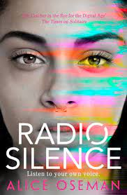
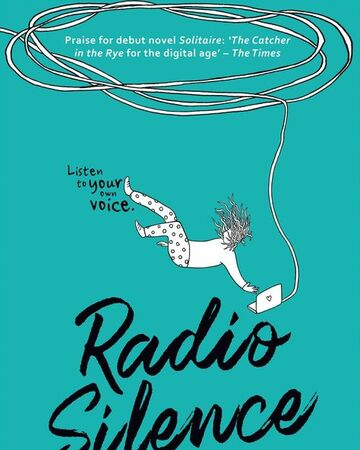
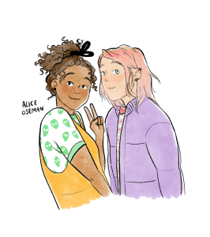

Radio Silence and Platonic Relationships
"I think everyone's a bit bored with boy-girl romances anyway;
I think the world's had enough of those, to be honest."


Radio Silence is one of those books which starts off as something cliched, you expect the obvious to happen:
boy meets girl, they're like minded and bond with each other and they fall in love. But there's an unlikely twist
that you'll never see coming!
So what exactly is the story about then, you ask?
Well, the story starts off with Frances Javier, an academically motivated Head Girl who has based every
decision of her life towards the accomplishment of her crystal clear goal: to get accepted to Cambridge. For the
world, getting good grades is her passion but it secretly dwells in drawing fan art for her favorite YouTube story
series- The Universe City which she posts on her Tumblr.
Until she meets Aled Last. The mysterious boy next door who speaks less than fifty words a day at school, it
is unfathomable to think that he could, even remotely, be Radio Silence, the narrator of Universe City.
And that brings me to my first point. I have always believed in this Japanese quote:
Everyone has three faces. The first one you show to the world, the second one to your family and close
friends and the third one is known only to you, concealed from everyone. The latter is the truest reflection
of your individuality.
Aled and Frances showed striking parallelism when it came to their 'faces', which inevitable drew them closer
and unveiling their long kept secrets about Universe City to each other. And this, paved the path to the journey
of their platonic relationship.
"I'd take hours to explain, I said."
"I'd listen to you for hours", he said."
Aled was the one person who got her, with whom she could be her authentic, real self. She loved her other
friends and her mom but she always felt the need to explain everything she did, like they unknowingly made her
feel lost about her own self. But with Aled, she could embrace the quirky fashion style, the love for fictional
characters and the deeply embedded feeling of loss and numbness over the same person; Aled's twin sister Carys
who'd escaped home under uninformed circumstances, coincidentally right after kissing Frances.
I think that we all have an Aled to our Frances or vice versa in our lives: kindred spirits with whom
everything is open and honest and real and you don't have to hide under a thousand superficial layers of pretence.
But even these relationships have their bunch of complexities that could shatter the bubble of security or
perfection you felt with them: the breach of mutual trust.
Frances inadvertently
revealed the true identity of the creator of Universe City i.e. Aled which severed their relationship as to
Aled, the podcast was a way to radiate his uncertainty and anxiety towards the future to a largely receptive
audience. As he dealt with the emotional consequences of the same, he distanced himself from Frances and his
erratic boyfriend Daniel, the head boy and rival to Frances, causing a lot of pain and suffering to all
three of them.
"I just want to understand what he's actually feeling. I don't know why he avoids me. Every time
I decide he just doesn't like me anymore, I start to doubt myself because he hasn't told anything. I just want
him to tell me the truth. When- when he lies to me because he thinks it'll make me feel better, it hurts."
Frances knows that she has to give Aled the space he needs in order to mend their fragile relationship.
After a terribly long time of staying apart, Frances visits Aled's home and finds him in an utterly distressed
state and discovers that all this time, he had been emotionally tortured by his own mother that lead him to be
so closed off and aloof from the world and the podcast was actually a cry of help to his estranged sister.
So Frances does everything she can to save Aled from the emotional abuse and to reunite him with his sister,
and in the process learns to redefine her own goals and dreams not based on the conventional orthodoxies but h
er true veritable aspirations.

The way the book ends is dramatic but feels right at the same time. What I loved the most about this book is:
a) that it's makes one realize that it's never too late to discover what you actually want to do in life for
what is the point of living when you're not doing or eventually planning to do what you love?
b) how it portrays the reality of platonic relationships: that they not just comprised rainbows and unicorns
but are susceptible to turbulence and turmoil. If it's really worth the effort, any friendship can be pieced
back together with patience, love, understanding and holding their hand through the darkness and storm in their
lives.
Hope you enjoyed today's piece! Let me know what you thought of it in the comments below and I'll
see you next week, bye :)